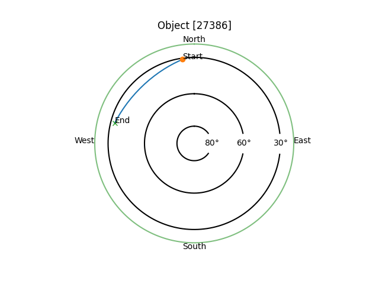
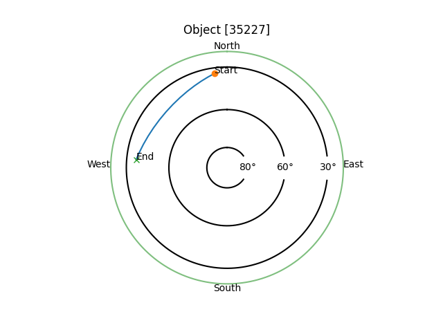
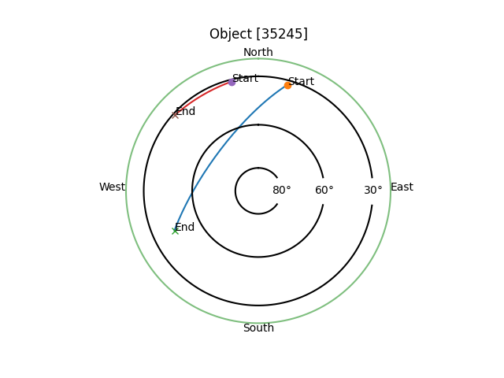
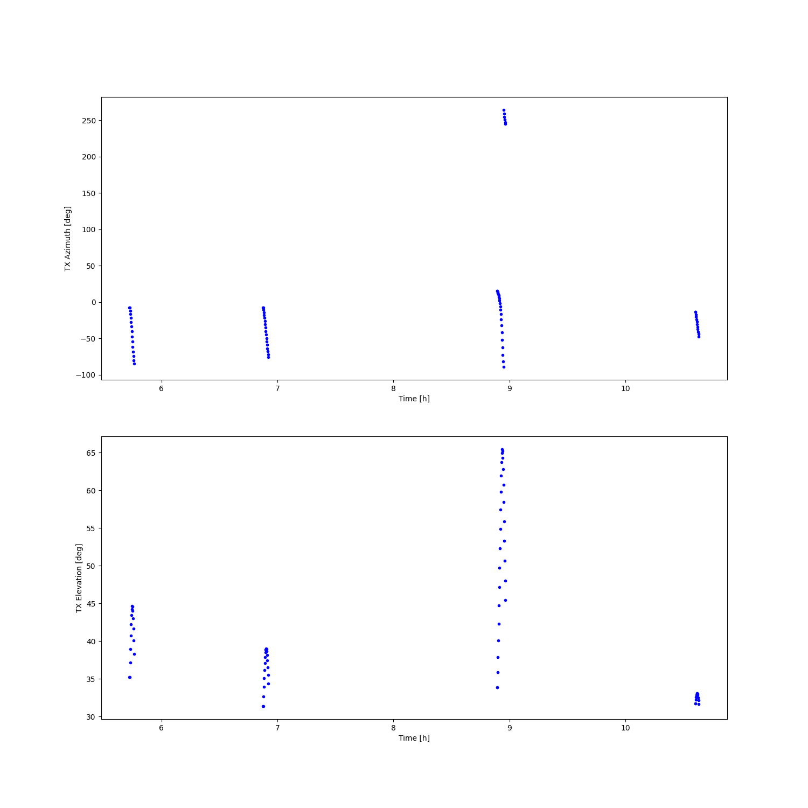

Note
Click here to download the full example code
E3D Demonstrator SST planner¶




Out:
2020-10-15 13:33:00.292 ALWAYS ; Found 3 objects to track
2020-10-15 13:33:00.293 INFO ; Tracking:get_passes(ind=0):propagating 1440 steps
/home/danielk/venvs/sorts/lib/python3.7/site-packages/astropy/coordinates/builtin_frames/utils.py:76: AstropyWarning: (some) times are outside of range covered by IERS table. Assuming UT1-UTC=0 for coordinate transformations.
warnings.warn(msg.format(ierserr.args[0]), AstropyWarning)
/home/danielk/venvs/sorts/lib/python3.7/site-packages/astropy/coordinates/builtin_frames/utils.py:62: AstropyWarning: Tried to get polar motions for times after IERS data is valid. Defaulting to polar motion from the 50-yr mean for those. This may affect precision at the 10s of arcsec level
warnings.warn(wmsg, AstropyWarning)
2020-10-15 13:33:00.316 INFO ; Tracking:get_passes(ind=0):propagating complete
2020-10-15 13:33:00.317 INFO ; Tracking:get_passes(ind=0):tx0-rx0 1 passes
2020-10-15 13:33:00.317 INFO ; Tracking:get_passes(ind=1):propagating 1440 steps
2020-10-15 13:33:00.342 INFO ; Tracking:get_passes(ind=1):propagating complete
2020-10-15 13:33:00.343 INFO ; Tracking:get_passes(ind=1):tx0-rx0 1 passes
2020-10-15 13:33:00.343 INFO ; Tracking:get_passes(ind=2):propagating 1440 steps
2020-10-15 13:33:00.368 INFO ; Tracking:get_passes(ind=2):propagating complete
2020-10-15 13:33:00.369 INFO ; Tracking:get_passes(ind=2):tx0-rx0 2 passes
2020-10-15 13:33:00.369 INFO ; Propagating 18 measurement states for object 0
2020-10-15 13:33:00.383 INFO ; Propagating 15 measurement states for object 1
2020-10-15 13:33:00.396 INFO ; Propagating 39 measurement states for object 2
t [s] TX0-az [deg] TX0-el [deg] RX0-az [deg] RX0-el [deg] RX0-r [km] Experiment Target Pass
------- -------------- -------------- -------------- -------------- ------------ ------------ -------------- ------
24750 -7.81651 31.3753 -7.81651 31.3753 1320.94 SST Object [27386] 0
24760 -7.81651 31.3753 -7.81651 31.3753 1320.94 SST Object [27386] 0
24770 -10.9501 32.6738 -10.9501 32.6738 1286.74 SST Object [27386] 0
24780 -14.3455 33.9233 -14.3455 33.9233 1255.67 SST Object [27386] 0
24790 -18.0096 35.0992 -18.0096 35.0992 1227.98 SST Object [27386] 0
24800 -21.9414 36.174 -21.9414 36.174 1203.91 SST Object [27386] 0
24810 -26.1297 37.1185 -26.1297 37.1185 1183.67 SST Object [27386] 0
24820 -30.5509 37.9032 -30.5509 37.9032 1167.48 SST Object [27386] 0
24830 -35.1677 38.5007 -35.1677 38.5007 1155.49 SST Object [27386] 0
24840 -39.9295 38.8882 -39.9295 38.8882 1147.84 SST Object [27386] 0
24850 -44.7746 39.05 -44.7746 39.05 1144.63 SST Object [27386] 0
24860 -49.6343 38.9794 -49.6343 38.9794 1145.89 SST Object [27386] 0
24870 -54.4389 38.679 -54.4389 38.679 1151.6 SST Object [27386] 0
24880 -59.1232 38.1612 -59.1232 38.1612 1161.7 SST Object [27386] 0
24890 -63.6316 37.4461 -63.6316 37.4461 1176.08 SST Object [27386] 0
24900 -67.921 36.5595 -67.921 36.5595 1194.57 SST Object [27386] 0
24910 -71.9623 35.5302 -71.9623 35.5302 1216.99 SST Object [27386] 0
24920 -75.7393 34.388 -75.7393 34.388 1243.12 SST Object [27386] 0
20610 -7.6938 35.2126 -7.6938 35.2126 1021.76 SST Object [35227] 0
20620 -7.6938 35.2126 -7.6938 35.2126 1021.76 SST Object [35227] 0
20630 -11.8068 37.1342 -11.8068 37.1342 985.034 SST Object [35227] 0
20640 -16.4506 38.9893 -16.4506 38.9893 952.525 SST Object [35227] 0
20650 -21.6599 40.7119 -21.6599 40.7119 924.68 SST Object [35227] 0
20660 -27.4404 42.2229 -27.4404 42.2229 901.935 SST Object [35227] 0
20670 -33.7532 43.4366 -33.7532 43.4366 884.687 SST Object [35227] 0
20680 -40.5009 44.2711 -40.5009 44.2711 873.263 SST Object [35227] 0
20690 -47.526 44.6621 -47.526 44.6621 867.896 SST Object [35227] 0
20700 -54.6258 44.577 -54.6258 44.577 868.698 SST Object [35227] 0
20710 -61.5849 44.0217 -61.5849 44.0217 875.654 SST Object [35227] 0
20720 -68.2117 43.0402 -68.2117 43.0402 888.619 SST Object [35227] 0
20730 -74.3668 41.7038 -74.3668 41.7038 907.333 SST Object [35227] 0
20740 -79.972 40.0971 -79.972 40.0971 931.449 SST Object [35227] 0
20750 -85.0038 38.305 -85.0038 38.305 960.557 SST Object [35227] 0
32010 15.2715 33.9166 15.2715 33.9166 1457.62 SST Object [35245] 0
32020 15.2715 33.9166 15.2715 33.9166 1457.62 SST Object [35245] 0
32030 14.0373 35.863 14.0373 35.863 1406.73 SST Object [35245] 0
32040 12.6381 37.9139 12.6381 37.9139 1357.52 SST Object [35245] 0
32050 11.0415 40.0719 11.0415 40.0719 1310.19 SST Object [35245] 0
32060 9.20671 42.337 9.20671 42.337 1264.95 SST Object [35245] 0
32070 7.08235 44.7055 7.08235 44.7055 1222.04 SST Object [35245] 0
32080 4.60303 47.1682 4.60303 47.1682 1181.73 SST Object [35245] 0
32090 1.6856 49.7082 1.6856 49.7082 1144.28 SST Object [35245] 0
32100 -1.77517 52.2977 -1.77517 52.2977 1110 SST Object [35245] 0
32110 -5.91026 54.894 -5.91026 54.894 1079.19 SST Object [35245] 0
32120 -10.8767 57.4352 -10.8767 57.4352 1052.16 SST Object [35245] 0
32130 -16.8479 59.8348 -16.8479 59.8348 1029.22 SST Object [35245] 0
32140 -23.9834 61.9786 -23.9834 61.9786 1010.64 SST Object [35245] 0
32150 -32.3633 63.7269 -32.3633 63.7269 996.672 SST Object [35245] 0
32160 -41.8871 64.9298 -41.8871 64.9298 987.517 SST Object [35245] 0
32170 -52.1862 65.4586 -52.1862 65.4586 983.31 SST Object [35245] 0
32180 -62.6475 65.2476 -62.6475 65.2476 984.115 SST Object [35245] 0
32190 -72.6003 64.32 -72.6003 64.32 989.921 SST Object [35245] 0
32200 -81.5473 62.7784 -81.5473 62.7784 1000.64 SST Object [35245] 0
32210 -89.2682 60.7668 -89.2682 60.7668 1016.12 SST Object [35245] 0
32220 264.228 58.4329 264.228 58.4329 1036.15 SST Object [35245] 0
32230 258.809 55.9043 258.809 55.9043 1060.46 SST Object [35245] 0
32240 254.302 53.2814 254.302 53.2814 1088.77 SST Object [35245] 0
32250 250.54 50.638 250.54 50.638 1120.77 SST Object [35245] 0
32260 247.38 48.0263 247.38 48.0263 1156.16 SST Object [35245] 0
32270 244.704 45.4812 244.704 45.4812 1194.63 SST Object [35245] 0
38160 -13.9116 31.7201 -13.9116 31.7201 1520.63 SST Object [35245] 1
38170 -13.9116 31.7201 -13.9116 31.7201 1520.63 SST Object [35245] 1
38180 -17.1283 32.2148 -17.1283 32.2148 1505.39 SST Object [35245] 1
38190 -20.4372 32.6095 -20.4372 32.6095 1493.31 SST Object [35245] 1
38200 -23.8194 32.8959 -23.8194 32.8959 1484.45 SST Object [35245] 1
38210 -27.253 33.0675 -27.253 33.0675 1478.88 SST Object [35245] 1
38220 -30.7138 33.1202 -30.7138 33.1202 1476.64 SST Object [35245] 1
38230 -34.1768 33.0525 -34.1768 33.0525 1477.74 SST Object [35245] 1
38240 -37.6166 32.8655 -37.6166 32.8655 1482.18 SST Object [35245] 1
38250 -41.0089 32.5632 -41.0089 32.5632 1489.92 SST Object [35245] 1
38260 -44.3315 32.1515 -44.3315 32.1515 1500.91 SST Object [35245] 1
38270 -47.5648 31.6387 -47.5648 31.6387 1515.09 SST Object [35245] 1
import pathlib
import numpy as np
import matplotlib.pyplot as plt
from tabulate import tabulate
from mpl_toolkits.mplot3d import Axes3D
from astropy.time import Time, TimeDelta
import sorts
from sorts.scheduler import Tracking, ObservedParameters
# The Tracking scheduler takes in a series of SpaceObjects and finds all the passes of the objects
# over the radar when "update" is called. Then "set_measurements", which is an abstract method,
# is used to determine when along those passes measurements should be done
#
# ObservedParameters implements radar observation of space objects based on the radar schedule
# and calculates the observed parameters (like range, range rate, RCS, SNR, ..)
# and can be used in case we want to predict what data we will measure
#
# The generate_schedule is not implemented and needs to be defined to generate a schedule output
# as the standard format for outputting a radar schedule in SORTS is to have a list of "radar"
# instance with the exact configuration of the radar for each radar action
#
class ObservedTracking(Tracking, ObservedParameters):
def set_measurements(self):
dw = self.controller_args['dwell']
#we probably need to make sure we do not have overlapping measurements
#this is a very "stupid" scheduler but we can do at least that!
#So create a vector of all scheduled measurements
t_all = []
for ind, so in enumerate(self.space_objects):
#This is a list of all passes times
t_vec = []
for txi in range(len(self.radar.tx)):
for rxi in range(len(self.radar.rx)):
for ps in self.passes[ind][txi][rxi]:
#lets just measure it all! From rise to fall
__t = np.arange(ps.start(), ps.end(), dw)
#Check for overlap
#to keep from this pass
t_keep = np.full(__t.shape, True, dtype=np.bool)
#to remove (index form) from all previous scheduled
t_all_del = []
#this creates a matrix of all possible time differences
t_diff = np.array(t_all)[:,None] - __t[None,:]
#find the ones that overlap with previously selected measurements
inds = np.argwhere(np.logical_and(t_diff <= 0, t_diff >= -dw ))
#just keep every other, so we are "fair"
first_one = True
for bad_samp in inds:
if first_one:
t_keep[bad_samp[1]] = False
else:
t_all_del.append(bad_samp[0])
first_one = not first_one
__t = __t[t_keep]
#slow and ugly but does the job (filter away measurements)
t_all = [t_all[x] for x in range(len(t_all)) if x not in t_all_del]
t_vec += [__t]
t_all += __t.tolist()
if self.logger is not None:
self.logger.info(f'Propagating {sum(len(t) for t in t_vec)} measurement states for object {ind}')
#epoch difference
dt = (self.space_objects[ind].epoch - self.epoch).to_value('sec')
if self.collect_passes:
t_vec = np.concatenate(t_vec)
self.states[ind] = so.get_state(t_vec - dt)
self.states_t[ind] = t
else:
self.states[ind] = [so.get_state(t - dt) for t in t_vec]
self.states_t[ind] = t_vec
def generate_schedule(self, t, generator, group_target=False):
data = np.empty((len(t),len(self.radar.tx)*2+len(self.radar.rx)*3+1), dtype=np.float64)
#here we get a time vector of radar events and the generator that gives the "radar" and meta data for that event
#Use that to create a schedule table
all_targets = dict()
data[:,0] = t
targets = []
experiment = []
passid = []
for ind,mrad in enumerate(generator):
radar, meta = mrad
targets.append(meta['target'])
if meta['target'] in all_targets:
all_targets[meta['target']] += [ind]
else:
all_targets[meta['target']] = [ind]
experiment.append('SST')
passid.append(meta['pass'])
for ti, tx in enumerate(radar.tx):
data[ind,1+ti*2] = tx.beam.azimuth
data[ind,2+ti*2] = tx.beam.elevation
for ri, rx in enumerate(radar.rx):
data[ind,len(radar.tx)*2+1+ri*3] = rx.beam.azimuth
data[ind,len(radar.tx)*2+2+ri*3] = rx.beam.elevation
data[ind,len(radar.tx)*2+3+ri*3] = rx.pointing_range*1e-3 #to km
data = data.T.tolist() + [experiment, targets, passid]
data = list(map(list, zip(*data)))
if group_target:
#Create a dict of tables instead
data_ = dict()
for key in all_targets:
for ind in all_targets[key]:
if key in data_:
data_[key] += [data[ind]]
else:
data_[key] = [data[ind]]
else:
data_ = data
return data_
######## RUNNING ########
from sorts.population import tle_catalog
e3d_demo = sorts.radars.eiscat3d_demonstrator_interp
#############
# CHOOSE OBJECTS
#############
objects = [ #NORAD ID
27386, #Envisat
35227,
35245,
]
epoch = Time('2020-09-08 00:24:51.759', format='iso', scale='utc')
t_start = 0.0
t_end = 12.0*3600.0 #end time of tracking scheduling
t_step = 10.0 #time step for finding passes
dwell = 10.0 #the time between re-pointing beam, i.e. "radar actions" or "time slices"
profiler = sorts.profiling.Profiler()
logger = sorts.profiling.get_logger()
try:
pth = pathlib.Path(__file__).parent / 'data' / 'tle.txt'
except NameError:
import os
pth = 'data' + os.path.sep + 'tle.txt'
pop = tle_catalog(pth, kepler=True)
pop.propagator_options['settings']['out_frame'] = 'ITRS' #output states in ECEF
#Get the space objects to track
space_objects = []
for obj in objects:
ind = np.argwhere(pop.data['oid'] == obj)
if len(ind) > 0:
space_objects.append(pop.get_object(ind[0]))
logger.always(f'Found {len(space_objects)} objects to track')
#Initialize the scheduler
scheduler = ObservedTracking(
radar = e3d_demo,
epoch = epoch,
space_objects = space_objects,
end_time = t_end,
start_time = t_start,
controller_args = dict(return_copy=True, dwell=dwell),
max_dpos = 1e3,
profiler = profiler,
logger = logger,
use_pass_states = False,
)
#update the passes
scheduler.update()
#set the measurements using the current passes
scheduler.set_measurements()
#Generate the schedule, grouped by target
grouped_data = scheduler.schedule(group_target=True)
for key in grouped_data:
pass_id = np.array([x[-1] for x in grouped_data[key]], dtype=np.int) #pass index is last variable
passes = np.unique(pass_id)
tv = np.array([x[0] for x in grouped_data[key]]) #we put t at index 0
az = np.array([x[1] for x in grouped_data[key]]) #we put az at index 1
el = np.array([x[2] for x in grouped_data[key]]) #and el at index 2
fig, ax = plt.subplots(1,1)
for pi, ps in enumerate(passes):
ax = sorts.plotting.local_tracking(
az[pass_id == ps],
el[pass_id == ps],
ax=ax,
t=epoch + TimeDelta(tv, format='sec'),
add_track = pi > 0, #if there are more then one, dont redraw all the extra, just add the track
)
ax.set_title(key)
#Generate a combined schedule
data = scheduler.schedule()
#Format and print schedule
rx_head = [f'TX{i}-{co}' for i in range(len(e3d_demo.tx)) for co in ['az [deg]', 'el [deg]']]
rx_head += [f'RX{i}-{co}' for i in range(len(e3d_demo.rx)) for co in ['az [deg]', 'el [deg]', 'r [km]']]
sched_tab = tabulate(data, headers=["t [s]"] + rx_head + ['Experiment', 'Target', 'Pass'])
print(sched_tab)
#Plot radar pointing diagram
fig = plt.figure(figsize=(15,15))
ax = fig.add_subplot(211)
ax.plot([x[0]/3600.0 for x in data], [x[1] for x in data], ".b")
ax.set_xlabel('Time [h]')
ax.set_ylabel('TX Azimuth [deg]')
ax = fig.add_subplot(212)
ax.plot([x[0]/3600.0 for x in data], [x[2] for x in data], ".b")
ax.set_xlabel('Time [h]')
ax.set_ylabel('TX Elevation [deg]')
plt.show()
Total running time of the script: ( 0 minutes 16.788 seconds)